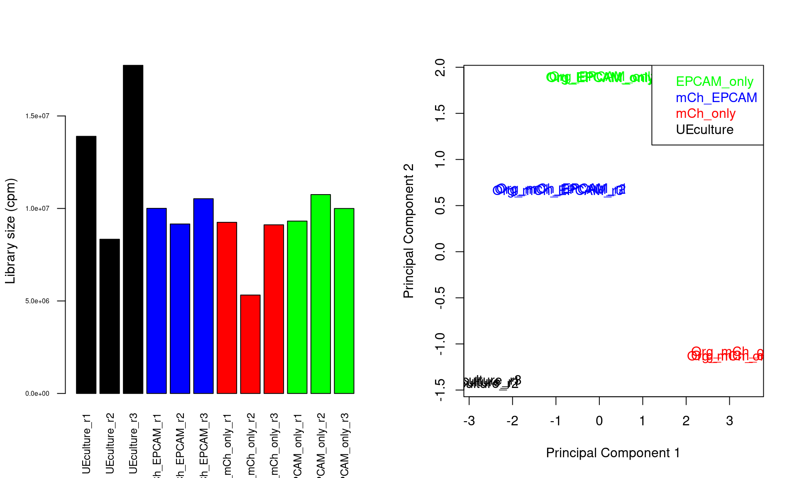
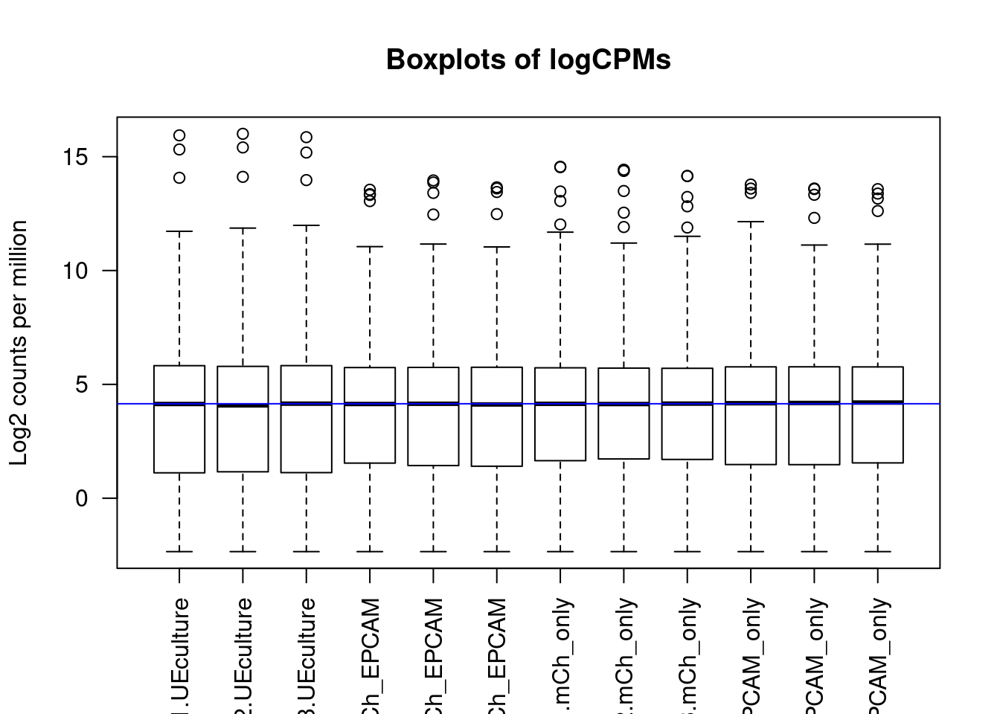
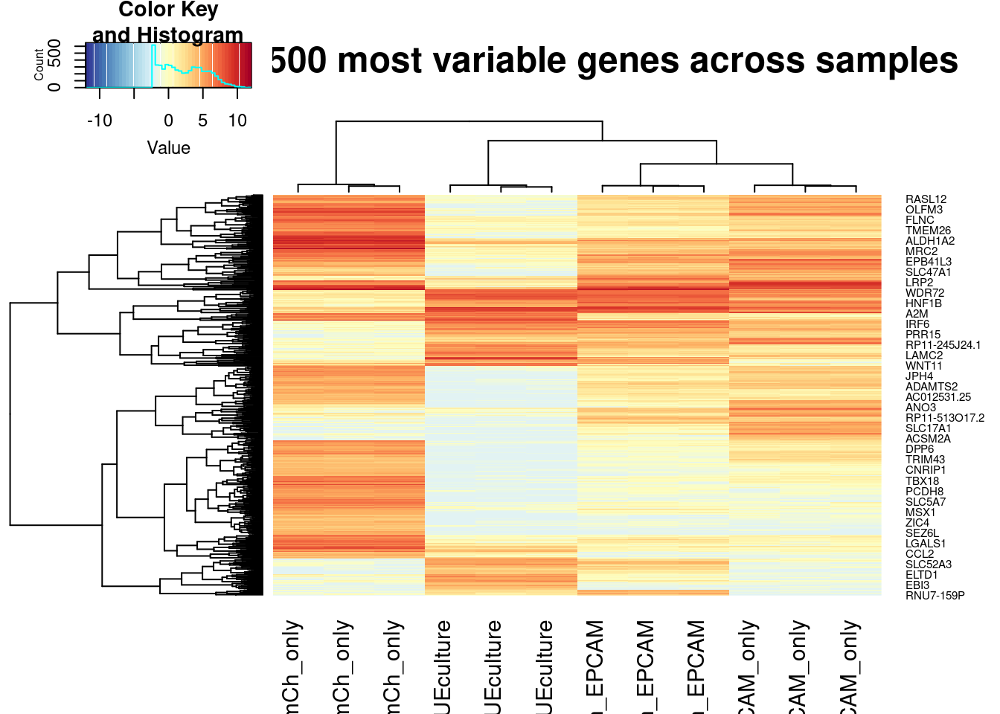
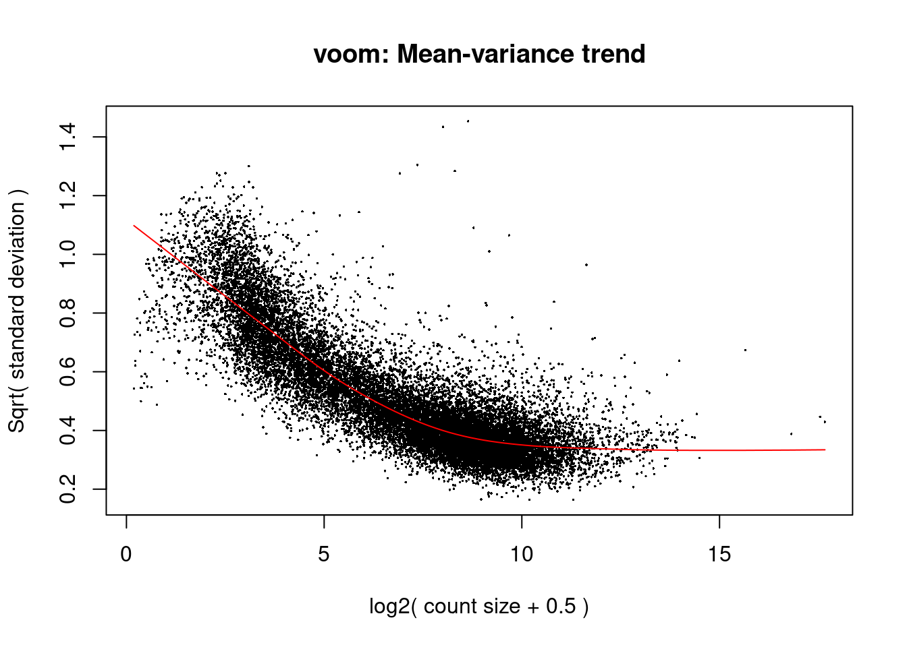
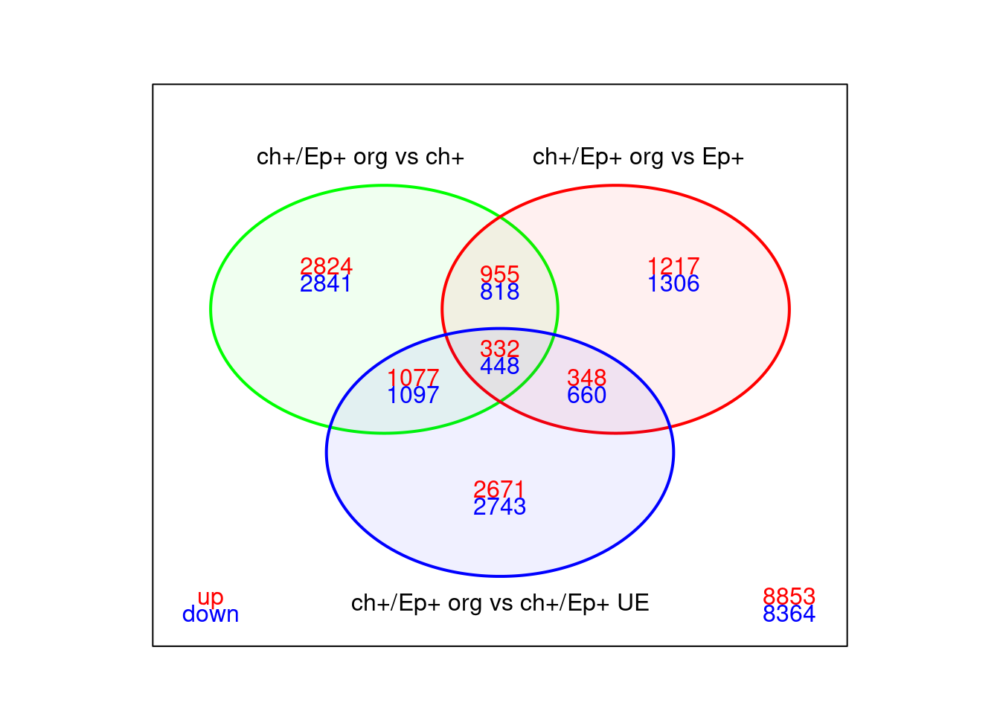
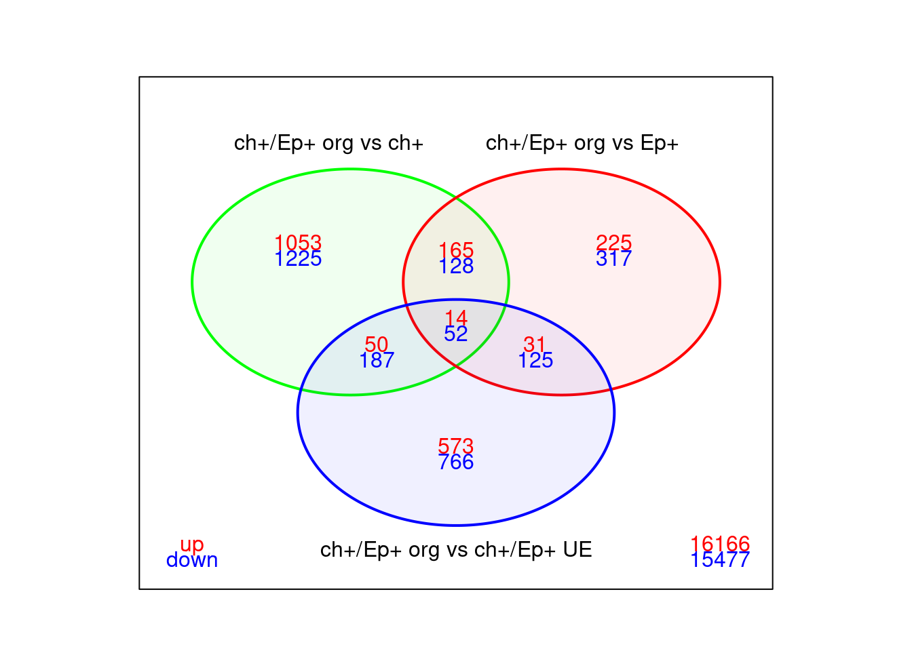
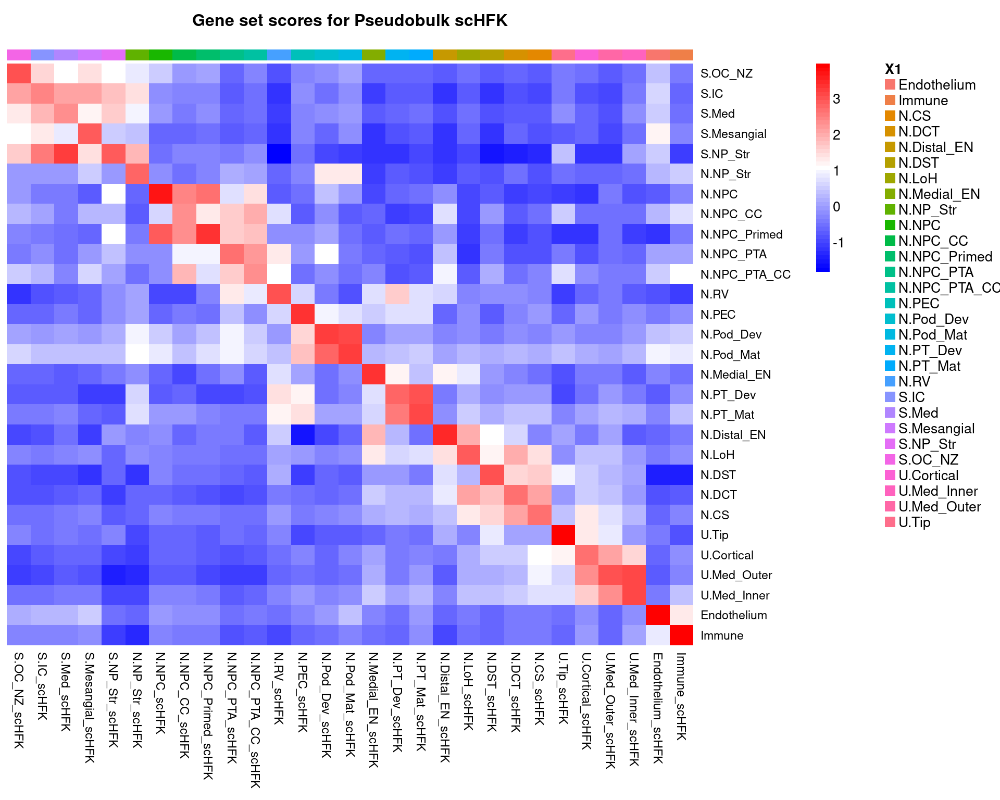

Last updated: 2020-12-28
Checks: 7 0
Knit directory: HowdenWilson2020/
This reproducible R Markdown analysis was created with workflowr (version 1.6.2). The Checks tab describes the reproducibility checks that were applied when the results were created. The Past versions tab lists the development history.
Great! Since the R Markdown file has been committed to the Git repository, you know the exact version of the code that produced these results.
Great job! The global environment was empty. Objects defined in the global environment can affect the analysis in your R Markdown file in unknown ways. For reproduciblity it’s best to always run the code in an empty environment.
The command set.seed(20201109) was run prior to running the code in the R Markdown file. Setting a seed ensures that any results that rely on randomness, e.g. subsampling or permutations, are reproducible.
Great job! Recording the operating system, R version, and package versions is critical for reproducibility.
Nice! There were no cached chunks for this analysis, so you can be confident that you successfully produced the results during this run.
Great job! Using relative paths to the files within your workflowr project makes it easier to run your code on other machines.
Great! You are using Git for version control. Tracking code development and connecting the code version to the results is critical for reproducibility.
The results in this page were generated with repository version 11477de. See the Past versions tab to see a history of the changes made to the R Markdown and HTML files.
Note that you need to be careful to ensure that all relevant files for the analysis have been committed to Git prior to generating the results (you can use wflow_publish or wflow_git_commit). workflowr only checks the R Markdown file, but you know if there are other scripts or data files that it depends on. Below is the status of the Git repository when the results were generated:
Ignored files:
Ignored: .Rhistory
Ignored: .Rproj.user/
Untracked files:
Untracked: README.html
Untracked: code/AddModuleScore_bulk.R
Untracked: code/GeneSets.Rmd
Untracked: code/functions.R
Untracked: code/hfk.R
Untracked: code/job_identity_markers.R
Unstaged changes:
Modified: .gitignore
Modified: README.md
Note that any generated files, e.g. HTML, png, CSS, etc., are not included in this status report because it is ok for generated content to have uncommitted changes.
These are the previous versions of the repository in which changes were made to the R Markdown (analysis/BulkRNA-Seq.Rmd) and HTML (docs/BulkRNA-Seq.html) files. If you’ve configured a remote Git repository (see ?wflow_git_remote), click on the hyperlinks in the table below to view the files as they were in that past version.
| File | Version | Author | Date | Message |
|---|---|---|---|---|
| Rmd | 11477de | Sean Wilson | 2020-12-28 | Updating additional information around analysis |
| html | 1297fee | Sean Wilson | 2020-12-28 | Build site. |
| html | 84370d5 | Sean Wilson | 2020-11-13 | Build site. |
| Rmd | 711a2c5 | Sean Wilson | 2020-11-13 | Set up initial repo on github |
We generated a number of Bulk RNA-Seq samples to analyse the transcriptomes of cell populations and cultures from this study.
In the first instance, we used a GATA3:mCherry reporter iPS cell line to generate organoids. These organoids were dissociated and stained with a conjugated EPCAM-Fluor488 antibody before being FACS sorted. We collected the various populations and Bulk RNA-Sequenced them. Ureteric Epithelium cultures generated from the GATA3+/EPCAM+ cells cultured in UE supporting conditions were also collected and sequenced.
These samples are “batch 1”.
Loading required package: limmaLoading required package: pkgmakerLoading required package: registryLoading required package: rngtoolsLoading required package: clusterNMF - BioConductor layer [OK] | Shared memory capabilities [NO: synchronicity] | Cores 31/32 To enable shared memory capabilities, try: install.extras('
NMF
')Loading required package: AnnotationDbiLoading required package: stats4Loading required package: IRangesLoading required package: S4Vectors
Attaching package: 'S4Vectors'The following object is masked from 'package:NMF':
nrunThe following object is masked from 'package:pkgmaker':
new2The following object is masked from 'package:base':
expand.gridLoading required package: OrganismDbiLoading required package: GenomicFeaturesLoading required package: GenomeInfoDbLoading required package: GenomicRangesLoading required package: GO.dbLoading required package: org.Hs.eg.dbLoading required package: TxDb.Hsapiens.UCSC.hg19.knownGene
Attaching package: 'gplots'The following object is masked from 'package:IRanges':
spaceThe following object is masked from 'package:S4Vectors':
spaceThe following object is masked from 'package:stats':
lowessRegistered S3 method overwritten by 'cli':
method from
print.boxx spatstat── Attaching packages ─────────────────────────────────────── tidyverse 1.3.0 ──✓ ggplot2 3.3.0 ✓ purrr 0.3.4
✓ tibble 3.0.4 ✓ dplyr 1.0.2
✓ tidyr 1.0.2 ✓ stringr 1.4.0
✓ readr 1.4.0 ✓ forcats 0.5.0── Conflicts ────────────────────────────────────────── tidyverse_conflicts() ──
x dplyr::collapse() masks IRanges::collapse()
x dplyr::combine() masks Biobase::combine(), BiocGenerics::combine()
x dplyr::desc() masks IRanges::desc()
x tidyr::expand() masks S4Vectors::expand()
x dplyr::filter() masks stats::filter()
x dplyr::first() masks S4Vectors::first()
x dplyr::lag() masks stats::lag()
x ggplot2::Position() masks BiocGenerics::Position(), base::Position()
x purrr::reduce() masks GenomicRanges::reduce(), IRanges::reduce()
x dplyr::rename() masks S4Vectors::rename()
x dplyr::select() masks OrganismDbi::select(), AnnotationDbi::select()
x dplyr::slice() masks IRanges::slice() ID Group
1 UEculture_r1 UEculture
2 UEculture_r2 UEculture
3 UEculture_r3 UEculture
4 Org_mCh_EPCAM_r1 mCh_EPCAM
5 Org_mCh_EPCAM_r2 mCh_EPCAM
6 Org_mCh_EPCAM_r3 mCh_EPCAM
7 Org_mCh_only_r1 mCh_only
8 Org_mCh_only_r2 mCh_only
9 Org_mCh_only_r3 mCh_only
10 Org_EPCAM_only_r1 EPCAM_only
11 Org_EPCAM_only_r2 EPCAM_only
12 Org_EPCAM_only_r3 EPCAM_onlyCreate a DGElist object and add gene annotation information to the data.
'select()' returned 1:many mapping between keys and columnsVisualise library sizes

| Version | Author | Date |
|---|---|---|
| 84370d5 | Sean Wilson | 2020-11-13 |
Remove genes with less than 1 count per million in at least 3 samples. Then normalise using TMM.

| Version | Author | Date |
|---|---|---|
| 84370d5 | Sean Wilson | 2020-11-13 |
[1] 500 12
| Version | Author | Date |
|---|---|---|
| 84370d5 | Sean Wilson | 2020-11-13 |
The differential expression analysis is performed using voom and limma. The voom (Law et al. 2014) function is used on the normalized counts to robustly estimate the mean-variance relationship and generate precision weights for each observation. Gene-wise linear models are then fitted to the voom-transformed log2 CPM to determine differences in gene expression.
Statistically significant differentially expressed genes are identified using empirical Bayes moderated t-tests (Smyth 2005), allowing for a mean-variance trend and performing robust empirical Bayes shrinkage of the gene-wise variances to protect against hypervariable genes (Phipson, Lee, et al. 2016). P-values are adjusted for false discovery rate using the Benjamini-Hochberg method (Benjamini & Hochberg 1995).
Set up the design matrix and apply voom to the counts.

| Version | Author | Date |
|---|---|---|
| 84370d5 | Sean Wilson | 2020-11-13 |
Fit the linear model.
Summarise the numbers of differentially expressed genes for each comparison.

| Version | Author | Date |
|---|---|---|
| 84370d5 | Sean Wilson | 2020-11-13 |
As there are many differentially expressed genes in the original analysis, we will also test relative to a threshold (TREAT) of absolute log2 fold change > 1.
Summarise the numbers of differentially expressed genes for each comparison. There are fewer DE genes from the TREAT analysis.

| Version | Author | Date |
|---|---|---|
| 84370d5 | Sean Wilson | 2020-11-13 |
We generated from the human fetal kidney single cell data Gene Sets that we could use to identify each population within the HFK and ask how similar each sample. The Gene Sets are derived from stringent DGE tests between each individual cluster and finding sets of genes that are most representative for each cluster identity.
These are generated in the below script.
Then we can visualise how these look on a pseudobulk analysis of the original HFK data.
'select()' returned 1:many mapping between keys and columns[1] "95 N.DCT"
[1] "28 N.NPC_Primed"
[1] "165 N.NPC_CC"
[1] "68 N.NPC"
[1] "24 N.Distal_EN"
[1] "170 S.IC"
[1] "228 U.Med_Inner"
[1] "216 S.Med"
[1] "548 Endothelium"
[1] "119 N.CS"
[1] "406 N.Pod_Mat"
[1] "216 N.Pod_Dev"
[1] "47 N.Medial_EN"
[1] "134 U.Cortical"
[1] "47 N.RV"
[1] "133 S.OC_NZ"
[1] "113 N.PEC"
[1] "27 N.DST"
[1] "11 S.NP_Str"
[1] "42 N.NP_Str"
[1] "205 N.PT_Dev"
[1] "117 U.Med_Outer"
[1] "31 N.NPC_PTA"
[1] "385 N.PT_Mat"
[1] "72 U.Tip"
[1] "231 N.NPC_PTA_CC"
[1] "710 Immune"
[1] "156 N.LoH"
[1] "183 S.Mesangial"
R version 3.6.1 (2019-07-05)
Platform: x86_64-pc-linux-gnu (64-bit)
Running under: CentOS Linux 7 (Core)
Matrix products: default
BLAS: /hpc/software/installed/R/3.6.1/lib64/R/lib/libRblas.so
LAPACK: /hpc/software/installed/R/3.6.1/lib64/R/lib/libRlapack.so
locale:
[1] LC_CTYPE=en_US.UTF-8 LC_NUMERIC=C
[3] LC_TIME=en_US.UTF-8 LC_COLLATE=en_US.UTF-8
[5] LC_MONETARY=en_US.UTF-8 LC_MESSAGES=en_US.UTF-8
[7] LC_PAPER=en_US.UTF-8 LC_NAME=C
[9] LC_ADDRESS=C LC_TELEPHONE=C
[11] LC_MEASUREMENT=en_US.UTF-8 LC_IDENTIFICATION=C
attached base packages:
[1] stats4 parallel stats graphics grDevices utils datasets
[8] methods base
other attached packages:
[1] forcats_0.5.0
[2] stringr_1.4.0
[3] dplyr_1.0.2
[4] purrr_0.3.4
[5] readr_1.4.0
[6] tidyr_1.0.2
[7] tibble_3.0.4
[8] ggplot2_3.3.0
[9] tidyverse_1.3.0
[10] gplots_3.1.0
[11] Glimma_1.14.0
[12] Homo.sapiens_1.3.1
[13] TxDb.Hsapiens.UCSC.hg19.knownGene_3.2.2
[14] org.Hs.eg.db_3.8.2
[15] GO.db_3.8.2
[16] OrganismDbi_1.28.0
[17] GenomicFeatures_1.36.4
[18] GenomicRanges_1.36.1
[19] GenomeInfoDb_1.20.0
[20] AnnotationDbi_1.46.1
[21] IRanges_2.20.2
[22] S4Vectors_0.24.3
[23] NMF_0.22.0
[24] bigmemory_4.5.36
[25] Biobase_2.46.0
[26] BiocGenerics_0.32.0
[27] cluster_2.1.0
[28] rngtools_1.5
[29] pkgmaker_0.32.2
[30] registry_0.5-1
[31] RColorBrewer_1.1-2
[32] Seurat_3.2.2
[33] edgeR_3.28.1
[34] limma_3.42.2
[35] workflowr_1.6.2
loaded via a namespace (and not attached):
[1] reticulate_1.16 tidyselect_1.1.0
[3] RSQLite_2.2.1 htmlwidgets_1.5.1
[5] grid_3.6.1 BiocParallel_1.20.1
[7] Rtsne_0.15 munsell_0.5.0
[9] codetools_0.2-16 ica_1.0-2
[11] statmod_1.4.35 future_1.16.0
[13] miniUI_0.1.1.1 withr_2.2.0
[15] colorspace_1.4-1 knitr_1.28
[17] rstudioapi_0.11 ROCR_1.0-11
[19] tensor_1.5 listenv_0.8.0
[21] git2r_0.27.1 GenomeInfoDbData_1.2.1
[23] polyclip_1.10-0 bit64_4.0.5
[25] rprojroot_1.3-2 vctrs_0.3.4
[27] generics_0.1.0 xfun_0.12
[29] R6_2.5.0 doParallel_1.0.16
[31] rsvd_1.0.3 locfit_1.5-9.4
[33] bitops_1.0-6 spatstat.utils_1.17-0
[35] DelayedArray_0.12.2 assertthat_0.2.1
[37] promises_1.1.0 scales_1.1.1
[39] gtable_0.3.0 globals_0.13.0
[41] goftest_1.2-2 rlang_0.4.7
[43] splines_3.6.1 rtracklayer_1.44.4
[45] lazyeval_0.2.2 broom_0.7.2
[47] modelr_0.1.6 BiocManager_1.30.10
[49] yaml_2.2.1 reshape2_1.4.4
[51] abind_1.4-5 backports_1.1.10
[53] httpuv_1.5.2 RBGL_1.62.1
[55] tools_3.6.1 gridBase_0.4-7
[57] ellipsis_0.3.1 ggridges_0.5.2
[59] Rcpp_1.0.5 plyr_1.8.6
[61] progress_1.2.2 zlibbioc_1.32.0
[63] RCurl_1.98-1.2 prettyunits_1.1.1
[65] rpart_4.1-15 deldir_0.1-29
[67] pbapply_1.4-3 cowplot_1.1.0
[69] zoo_1.8-8 haven_2.2.0
[71] SummarizedExperiment_1.16.1 ggrepel_0.8.2
[73] fs_1.5.0 here_0.1
[75] magrittr_1.5 data.table_1.13.0
[77] reprex_0.3.0 lmtest_0.9-38
[79] RANN_2.6.1 whisker_0.4
[81] fitdistrplus_1.1-1 matrixStats_0.57.0
[83] hms_0.5.3 patchwork_1.0.0
[85] mime_0.9 evaluate_0.14
[87] xtable_1.8-4 XML_3.99-0.3
[89] readxl_1.3.1 gridExtra_2.3
[91] compiler_3.6.1 biomaRt_2.40.5
[93] KernSmooth_2.23-17 crayon_1.3.4
[95] htmltools_0.5.0 mgcv_1.8-33
[97] later_1.0.0 lubridate_1.7.9
[99] DBI_1.1.0 dbplyr_1.4.4
[101] MASS_7.3-53 rappdirs_0.3.1
[103] Matrix_1.2-18 cli_2.1.0
[105] igraph_1.2.5 pkgconfig_2.0.3
[107] bigmemory.sri_0.1.3 GenomicAlignments_1.20.1
[109] plotly_4.9.2.1 xml2_1.2.5
[111] foreach_1.5.1 XVector_0.24.0
[113] rvest_0.3.5 digest_0.6.25
[115] sctransform_0.3.1 RcppAnnoy_0.0.16
[117] graph_1.64.0 spatstat.data_1.4-3
[119] Biostrings_2.52.0 cellranger_1.1.0
[121] rmarkdown_2.1 leiden_0.3.3
[123] uwot_0.1.8 shiny_1.4.0.2
[125] Rsamtools_2.0.3 gtools_3.8.2
[127] lifecycle_0.2.0 nlme_3.1-150
[129] jsonlite_1.7.1 fansi_0.4.1
[131] viridisLite_0.3.0 pillar_1.4.3
[133] lattice_0.20-41 fastmap_1.0.1
[135] httr_1.4.1 survival_3.2-7
[137] glue_1.4.2 spatstat_1.63-3
[139] png_0.1-7 iterators_1.0.13
[141] bit_4.0.4 stringi_1.5.3
[143] blob_1.2.1 caTools_1.18.0
[145] memoise_1.1.0 irlba_2.3.3
[147] future.apply_1.6.0